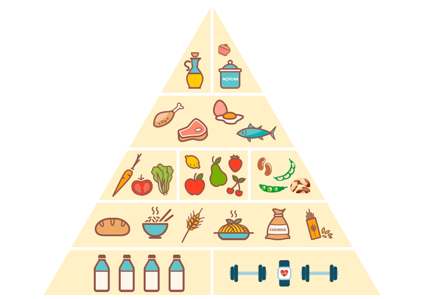

Pirâmide Alimentar
Quando pensamos em adotar uma alimentação saudável logo nos vem à cabeça o questionamento de por onde começar. Por isso, conhecer a pirâmide alimentar é uma ótima forma de se orientar; ela indica quais são os alimentos que possuem os nutrientes essenciais para o nosso dia a dia, promovendo a saúde e nos prevenindo de doenças.
Composição da pirâmide Alimentar
Na base da pirâmide, estão a água e a atividade física. Compondo a maior parte do corpo humano, a água é um nutriente essencial para os processos fisiológicos de digestão, absorção e excreção, além das reações químicas em geral e manutenção da temperatura corporal. Recomenda-se de acordo com a pirâmide alimentar, uma ingestão de aproximadamente dois litros de água por dia, nos intervalos das refeições. A atividade física aliada a uma alimentação saudável é de grande importância para melhoria da qualidade de vida e manutenção da saúde. Recomenda-se, portanto, no mínimo 150 minutos de atividade física por semana. Mas lembre-se! Consulte um profissional capacitado a lhe ajudar. Já os alimentos estão organizados em quatro níveis e oito grupos alimentares; são divididos em: energéticos – constituídos pelos carboidratos; reguladores – constituídos pelas vitaminas, minerais e fibras (frutas, verduras, legumes); construtores – constituídos pelas proteínas de origem vegetal e animal; e os energéticos extras – compostos pelos açúcares e gorduras em geral, que devem ser ingeridos de maneira restrita. Além da água.
Grupos Alimentares
Cereais, pães e tubérculos
É o maior grupo alimentar e compõe a base da pirâmide alimentar, são os nutrientes energéticos. Nele, encontram-se os alimentos fontes de carboidratos como aveia, pão, arroz, farinhas integrais, batata doce entre outros. Na pirâmide, o consumo destes é priorizado, pois são as principais fontes de energia do organismo, com carboidratos complexos (ricos em fibras), vitaminas do complexo B e fibras.
Hortaliças
Neste encontram-se as verduras e os legumes. Ao consumi-los seu organismo receberá vitaminas, minerais e fibras. São essenciais para a regulação de diversas funções metabólicas e funcionamento adequado do organismo. No entanto, a ingestão inadequada pode levar a estados de carência e a manifestações clínicas.
Frutas
Assim como as hortaliças, as frutas são fontes de fibras, vitaminas e minerais essenciais ao equilíbrio e funcionamento regular do organismo.
Leguminosas
Neste grupo encontram-se os grãos, como: feijões, lentilha, grão de bico, soja e oleaginosas. Além do aporte proteico, são boas fontes de fibras. As leguminosas são fontes de proteínas de origem vegetal.
Carnes e ovos
Este é o principal grupo fonte de proteínas de origem animal, que é um nutriente essencial para a formação de tecidos, enzimas e anticorpos. São ricas também em ferro e vitaminas B6 e B12 que têm efeito preventivo nas anemias. De acordo com a pirâmide, seu consumo deve ser de no máximo duas vezes ao dia, pois estes alimentos são geralmente ricos em gorduras saturadas e colesterol, por isso prefira as carnes magras.
Leite e derivados
Os alimentos deste grupo também fornecem proteínas ao organismo, além de cálcio, nutriente fundamental para constituição óssea e dentes. O consumo deve ser moderado, pois nos integrais há presença de gordura saturada e colesterol. Por isso prefira leite e derivados desnatados.
Óleos e gorduras
São alimentos fonte de energia e são responsáveis pelo transporte de vitaminas do complexo B. Por serem ricos em calorias, sua ingestão deve ser moderada e equilibrada. É preferível optar pelos alimentos fontes de gorduras boas como óleo vegetal, azeite de oliva extra virgem, linhaça, castanhas e amêndoas.
Açúcares e doces
Este grupo na pirâmide alimentar é composto por açúcar, mel, doces e produtos açucarados como achocolatados, por exemplo. São carboidratos simples, não tem fibras. São pobres em nutrientes e seu consumo deve ser esporádico.